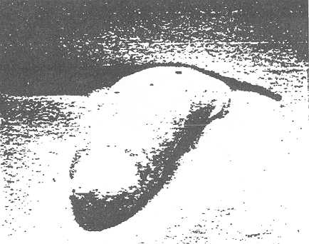
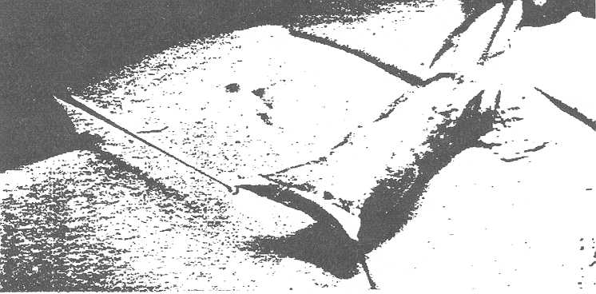
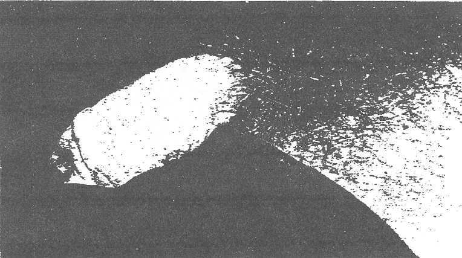

THE CIRCUMCISION REFERENCE LIBRARY
By JACK PENN, F.R.C.S.
Johannesburg
Mr. E., aged 35 years, was concerned about the fact that he had a circumcised penis and did not like it. He wished to have his prepuce replaced. He agreed to having psychological investigation. The report submitted indicated a markedly psychological disturbance due to his circumcision and that he was normal in every other way. Surgical repair was then offered.
|  |
| FIG. 1. --Before preputial reconstruction. |
|  |
| FIG. 2 --"Degloving" of penile skin to form lining of prepuce. |
|  |
| FIG. 3 --Result of preputial reconstruction. |
The operation consisted of a "degloving" of the skin of the penis by means of a circumferential incision at the base of the penis with the skin pulled forward to cover the glans. A free graft was then applied to cover the entire new area from the tip of the new prepuce to the base of the glans. The result was satisfactory physically and the patient was completely rehabilitated psychologically. (Figs. 1 to 3).
Submitted for publiication, November, 1962.
http://www.cirp.org/library/restoration/penn1/